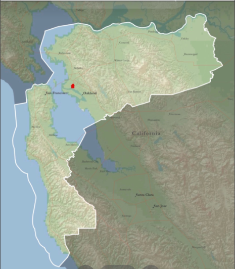

California Oakland/San Francisco Mission
The picture on the side is the areas that we cover in our Mission. The red house in the middle is where our mission home is located. We have different Zones in the mission and for the president to know his missionaries better, each zone pick a week to have their preparation day at the mission home. Preparation Day is days for missionaies to prepare themselves for missionary work and times given for them to call their families.